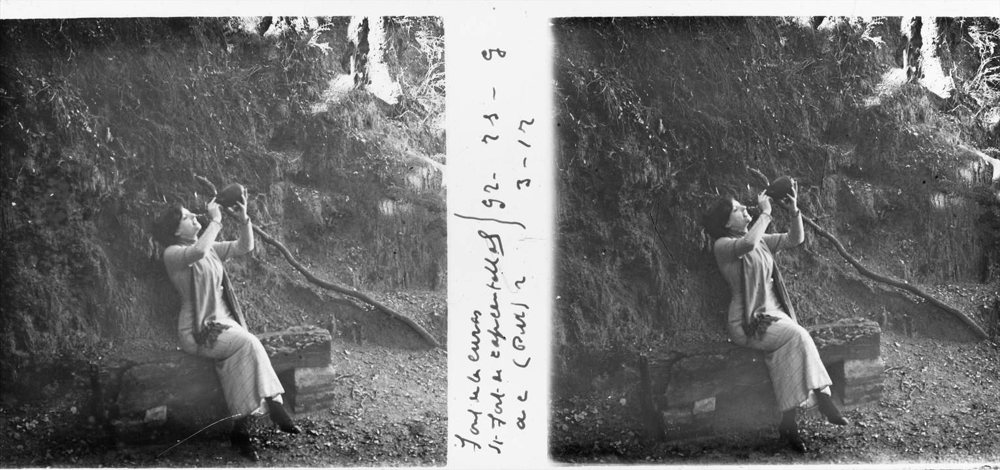

Font a Sant Fost de Campsentelles — imatge il·lustrativa, no identificada amb la Font de les Monges concreta (Josep Salvany i Blanch, Memòria Digital de Catalunya, domini públic)
No es pot parlar de noucentisme ni de modernisme a la Colònia Bosc sense parlar de la Font de les Monges: un edifici mític, carregat d'història i de llegendes, situat a les afores de la urbanització de què parlem, pel camí homònim, que després mor a la cruïlla amb el camí antic de Sant Fost, el camí dels Castanyers i el camí del Torrent.
La Font de les Monges és, sense cap mena de dubte, un dels llocs més mítics de Sant Fost i de la Conreria: ho és per la seva ubicació, envoltada de bosc; per la seva història, les seves llegendes, els seus camins, la seva mina i l'edifici annex.
Parlar de la Font de les Monges és traslladar-se al segle XIII, a un marc històric en què hi havia un convent de monges agustines a l'edifici que coneixem com la Conreria, o com el seminari —tot i que ara és un alberg de la Fundació Pere Tarrés. Segons la llegenda, la Font ja hi seria des d'aleshores, tot i que la primera menció documental és posterior, a l'Atlante Español.
Com hem dit, és clar que en aquella època la Font ja hi era, però també hi havia la construcció que l'envoltava en primera instància: l'arc i la volta que envolten la mítica font. No tenim dates de quan es va fer aquesta primera construcció, però la podem veure en un dibuix de Llorenç Brunet de 1889, i segueix igual en algunes fotos de la primera dècada del segle XX.
Els aplecs de sardanes i l'auge del restaurant
A principis de la segona dècada del segle XX hi va haver uns canvis, segurament fruit de l'organització d'aplecs de sardanes; cap als anys 1921-1922, al costat de la font es va construir un petit edifici per servir begudes, amb unes característiques similars a l'estil dels edificis de la Colònia Bosc.
Anys després, amb l'auge dels aplecs, es va construir el magnífic edifici annex que seria restaurant i lloc de trobada, i que avui dia està en runes. L'edifici tenia influències modernistes i noucentistes —tot i que en principi eren estils oposats, hi van conviure i es van barrejar.
Va ser una època de glòria i èxit per al restaurant i per a la zona: cada any, pels volts del mes de juny, es feia un aplec multitudinari de sardanes de Badalona —es pot veure el programa del 29 i la sardana de la Font de les Monges. Era una zona enjardinada, amb mur.
Pendent de desenvolupar: la Guerra Civil i el declivi del restaurant —a l'original només hi consta l'apunt «la guerra, declivi»— i l'organitzador concret dels aplecs. Fa poc, en la neteja que va transformar uns antics corriols en camins i pistes forestals, van sortir objectes de l'època. Hi ha un projecte de la regidoria per mantenir les façanes i condicionar l'esplanada; de moment no s'hi pot accedir per un arbre caigut.
Llegendes associades
- Llegenda de l'arbre dels nassos — pendent de desenvolupar.
- Sardana «de les Monges» i «de la Font de les Monges» — pendent de desenvolupar.